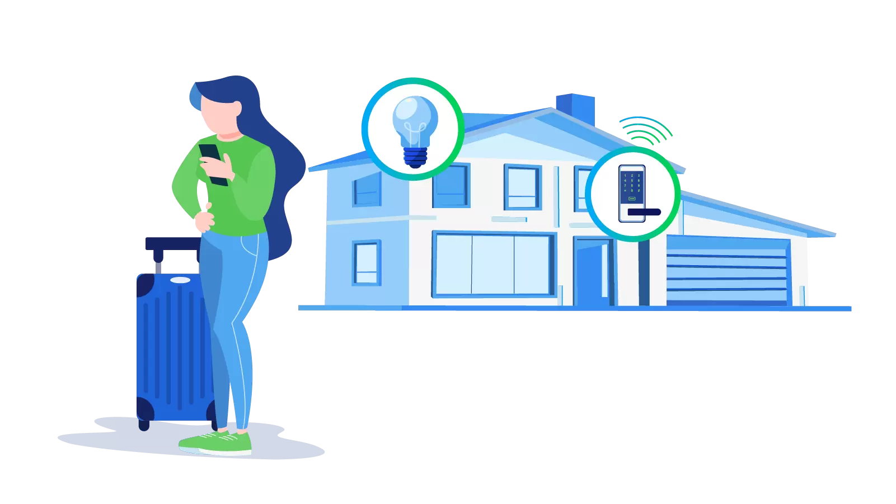

The information technology industry is experiencing a boom like never before, and more and more brands are looking to expand in this area because of the immense amount of potential. Information technology has various applications, which is also why it has proven to be such a beneficial key component in the entire structure that industries now have. With the growing importance of this, it becomes important to understand the important aspects of this industry and the key components that make it the revolutionary tool that it is.
New trends arise within this industry every year, and it becomes important for professionals to be familiar with these different trends and all that they entail. No matter what profession one is working in, being familiar with these can improve your professional standing and can help one understand what the potential upgrades are for the industry that you are already working in.
One of the biggest trends that have emerged during the past year is that of cloud computing. More and more industries are realizing that it is important for a company to have a designated place for all of their digital information and resources, and having a well-protected place that can take care of everything and keep the information safe has almost become a necessity.
Cloud computing is the go-to solution for brands who want to improve their work and make it more efficient in a digital space.
Mobile applications have only grown in popularity over the past few years, and this year, they are surfacing in bigger and better ways.

Brands and industries all over the world are trying to find ways in which one can improve their work through the use of mobile apps and through the implementation of new resources that can make working on the go more efficient.
Big data analytics is a trend that has grown over the past few years, and this is something that is now being implemented in almost every kind of industry that makes use of large-scale production processes and manufacturing and supply.
Big data analytics allows brands to process their information in a better manner and enables them to reach a much better understanding of the areas they need to develop.
Smart machines that use artificial intelligence or automation are on the rise, even in small-scale units and smaller implementations. Homes are now becoming smarter as a result of smart technology being used and opted for in homes.
Simple tools such as Alexa have become an essential part of homes, and these are only estimated to increase over the next year.
The Internet Of Things is a concept that all digital devices are connected by a single medium through which one would be able to control everything within their homes. More and more brands realize that this is indeed the way of the future and is something that is within technological reach.
More brands are beginning to incorporate this concept, and the statistics that showcase this are prevalent enough to attest to positive growth in this regard.
Predictive Analytics is the process of analyzing large volumes of data to be able to come to a conclusion regarding the possible outcomes that a situation might have. Market analysts see this as an incredibly valuable tool for brands to note whether they should be moving in a particular direction or not.
This has proven to be an incredibly efficient method of analysis and saves the industry an incredible amount of money in the process.
While most tech advancements help us move towards the greater good, some aren’t as beneficial as we might think. In 2019, the number of chatbots that were being used was far more than what we expected. Chatbots aren’t, however, always bad because, in some situations, they have improved the customer service that we have access to.
Chatbots are a program to respond to certain queries in certain ways and are designed to help customers with some of the more basic functions that they would need. These are, of course, still not in a position wherein they are a complete substitute for real live customer service, which is what has helped them still stay in development.